This report provides a comprehensive analysis of
Common Vulnerabilities and Exposures (CVE),
Known Exploited Vulnerabilities (KEV) and
Exploit Prediction Scoring System (EPSS).
CVEs that have CVSS scores assigned
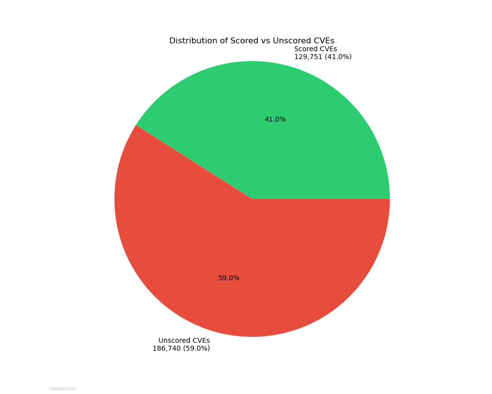
Illustrates the proportion of CVEs that have been assigned CVSS scores versus those that remain unscored, providing insight into the completeness of vulnerability scoring.
Average CVSS Score Trends
Shows the evolution of average CVSS scores over time for all CVEs, helping identify if vulnerabilities are becoming more or less severe on average.
Average KEV CVSS Score Trends
Displays the trend of CVSS scores specifically for Known Exploited Vulnerabilities (KEVs), showing how the severity of actively exploited vulnerabilities has changed over time.
Severity Distribution (Stacked)
Shows the relative distribution of severity levels as percentages over time, with each severity level stacked to show the complete composition for each year.
Severity Trends
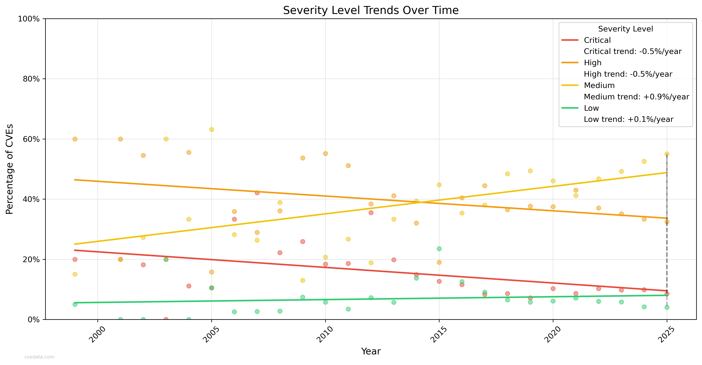
Displays trend lines for each severity level over time, showing how the proportion of different severity levels has evolved and identifying long-term patterns.
KEV Distribution in Total CVE Population
Shows what percentage of all CVEs are included in the KEV catalog, highlighting how selective the KEV list is compared to the total CVE population.
Score Distribution Comparison
This comparison shows the CVSS score distribution between KEV entries and all CVEs, highlighting how KEV vulnerabilities' severity compares to the general CVE population.
CVSS Score Mathematical Probability for CVSS 2.0
This visualization shows the theoretical distribution of all possible CVSS 2.0 base scores based on the scoring formula. It helps understand which scores are mathematically more likely to occur based on the CVSS calculation algorithm.
CVSS Score Distribution compared to CVSS Score Mathematical Probability For CVSS 2.0
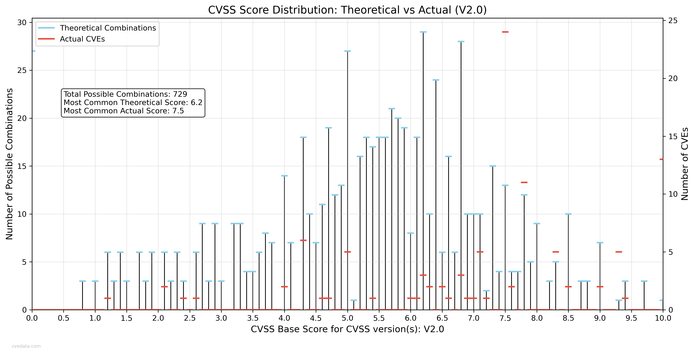
This comparison shows the CVSS score distribution between the theoretical probabilistic distribution and the actual distribution for CVSS 2.0.
CVSS Score Mathematical Probability for CVSS 3.x
This visualization shows the theoretical distribution of all possible CVSS 3.x base scores based on the scoring formula. It helps understand which scores are mathematically more likely to occur based on the CVSS calculation algorithm.
CVSS Score Distribution compared to CVSS Score Mathematical Probability For CVSS 3.x
This comparison shows the CVSS score distribution between the theoretical probabilistic distribution and the actual distribution for CVSS 3.x.
CVSS Score Mathematical Probability for CVSS 4.0
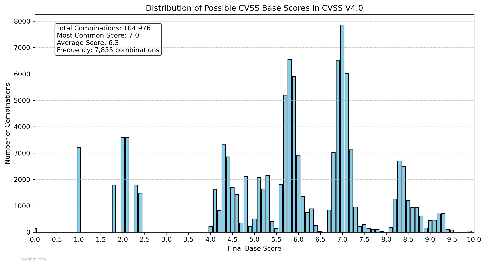
This visualization shows the theoretical distribution of all possible CVSS 4.0 base scores based on the scoring formula. It helps understand which scores are mathematically more likely to occur based on the CVSS calculation algorithm.
CVSS Score Distribution compared to CVSS Score Mathematical Probability For CVSS 4.0
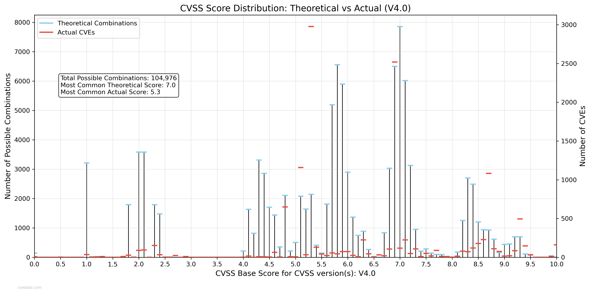
This comparison shows the CVSS score distribution between the theoretical probabilistic distribution and the actual distribution for CVSS 4.0.
Critical CVE Distribution compared to KEV
Shows the proportion of critical CVEs (CVSS score ≥ 9.0) that are included in the KEV catalog versus those that are not, helping understand the relationship between severity and exploitation.
KEVs by Year
Shows the distribution of Known Exploited Vulnerabilities by the year of their corresponding CVE ID, indicating trends in vulnerability exploitation over time.
CVSS Score Distribution in KEV List
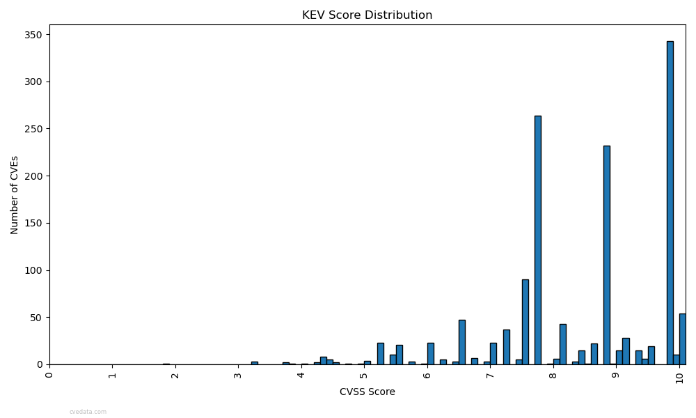
This bar chart shows the distribution of CVSS scores across different severity levels (Critical, High, Medium, Low, and Unused) within the Known Exploited Vulnerabilities (KEV) catalog.
Percentage Distribution of CVSS Scores
A pie chart showing the percentage breakdown of CVSS scores by severity level in the KEV list, providing a clear view of the proportion of vulnerabilities at each severity level.
CVE Publication Delays
Distribution of time delays between CVE reservation and publication dates, showing the typical lifecycle of vulnerability disclosure.
CVE Publication Delays (Log Scale)
Log-scale view of publication delays, better highlighting the distribution of both short and long delays in the vulnerability disclosure process.
CVE Growth Over Time
Shows the cumulative growth of CVEs over the years, illustrating the increasing pace of vulnerability discovery and disclosure.
MITRE vs Non-MITRE CVEs Over Time
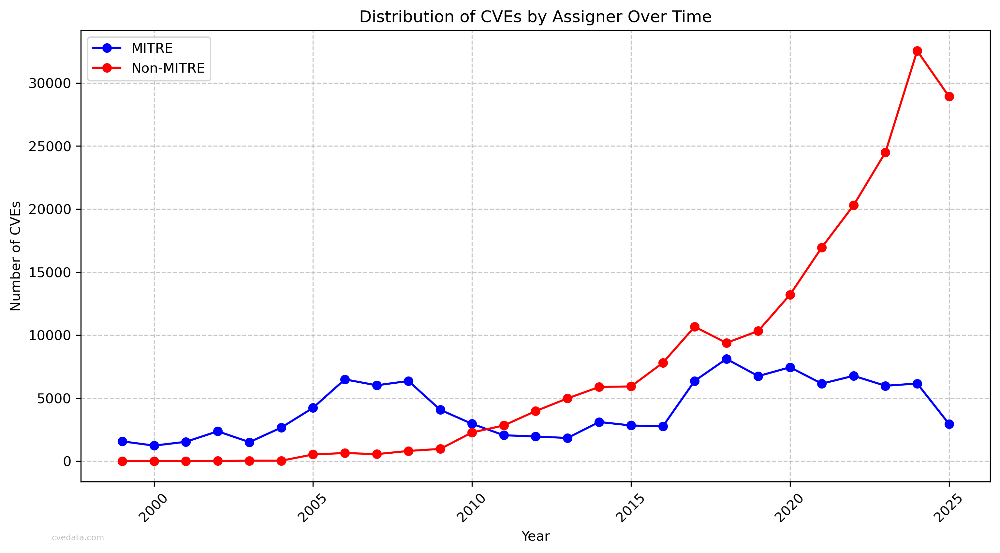
Shows the trend of MITRE vs Non-MITRE CVEs assigners over time.
CVE and KEV Growth Comparison
Compares the growth rates of CVEs and KEVs over time, showing how the actively exploited vulnerability landscape has evolved compared to overall vulnerability discoveries.
CVE Tag Distribution
Shows the distribution of different tags used in CVE records, providing insight into the various categories and attributes of vulnerabilities.
Disputed CVEs by Year
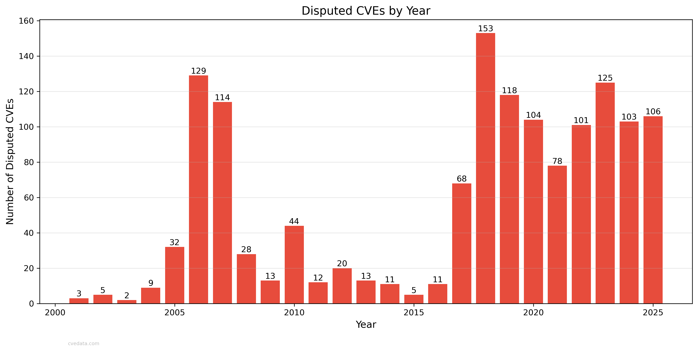
Tracks the number of disputed CVEs over time, showing trends in vulnerability contestation and verification processes.
Unscored CVEs by Year
Shows the number and percentage of CVEs without CVSS scores for each year, helping identify trends in scoring coverage and potential gaps in vulnerability assessment.
Unscored KEVs by Year
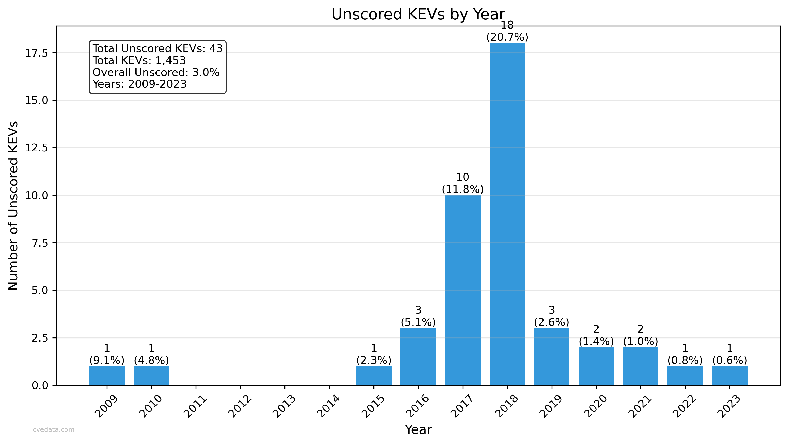
Displays the number and percentage of Known Exploited Vulnerabilities (KEVs) that lack CVSS scores, highlighting potential gaps in severity assessment for actively exploited vulnerabilities.
Unscored Vulnerabilities Comparison
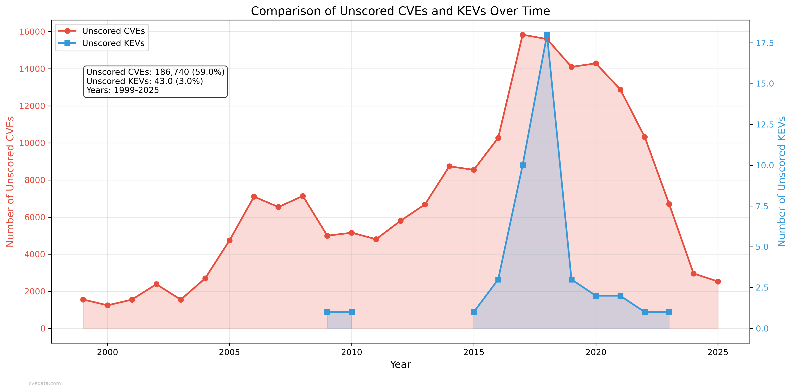
Compares the growth rates of CVEs and KEVs over time, showing how the actively exploited vulnerability landscape has evolved compared to overall vulnerability discoveries.
Percentage of Unscored CVEs
Shows the percentage of unscored CVEs and KEVs over time, providing a normalized view of scoring coverage trends between general vulnerabilities and known exploited ones.
CVSS Versions Over Time
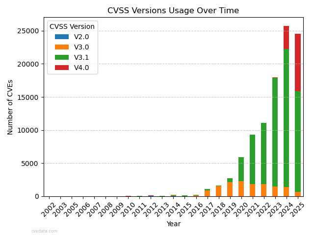
Shows the distribution of CVSS versions over time, providing insight into the evolution of vulnerability scoring standards.
Rejected CVEs by Year
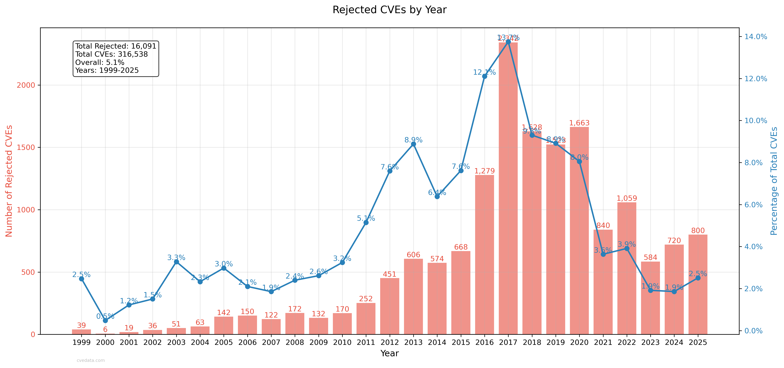
Tracks the number of rejected CVEs over time, showing trends in the vulnerability rejection processes.
Actively Exploited CVEs Over Time
Shows the number of CVEs by year tagged as exploited, providing insight into the current state of exploited vulnerabilities.
CVE with Exploit References over Time
Shows both the absolute number and percentage of CVEs that have references tagged as exploits, indicating the prevalence of publicly documented exploit code over time.
CVSS Combinations
Shows the distribution of CVSS combinations over time, providing insight into the evolution of vulnerability scoring standards.
CVSS Version Density
Shows the density of CVSS versions over time, providing insight into the evolution of vulnerability scoring standards.
EPSS Score Distribution
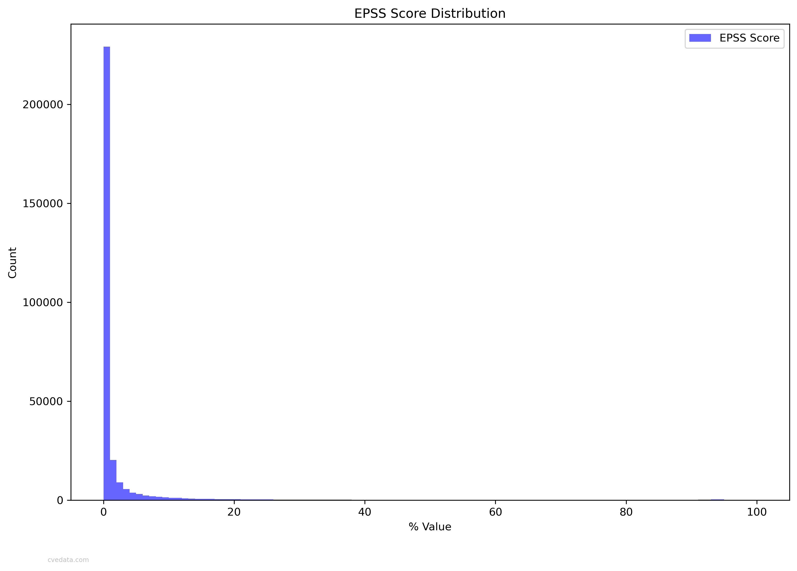
Shows the distribution of EPSS scores over time, providing insight into the evolution of vulnerability scoring standards.
EPSS Score Distribution (Log Scale)
Shows the distribution of EPSS scores over time on a log scale, providing a clearer view of the distribution of EPSS scores.
EPSS Probability Percentile Distribution
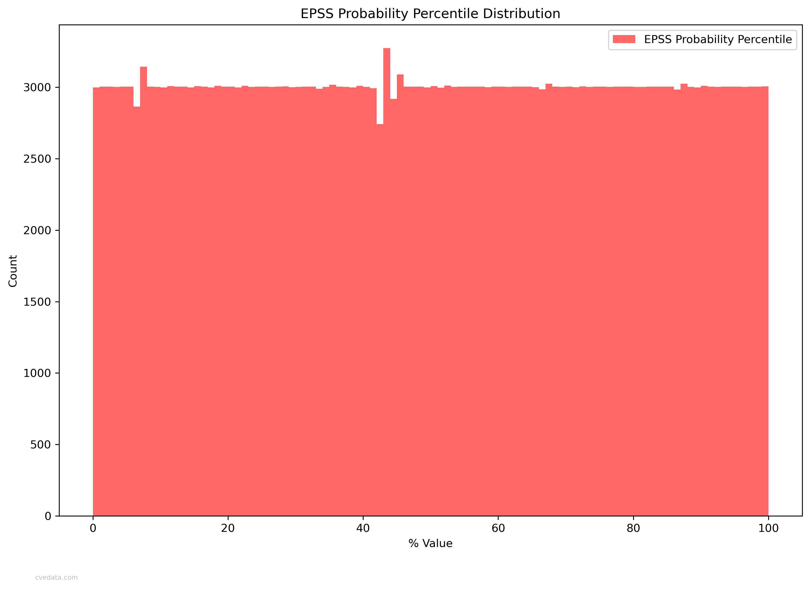
Shows the distribution of EPSS probability percentiles over time, providing insight into the evolution of vulnerability scoring standards.
EPSS Coverage Pie Chart
Shows the distribution of EPSS coverage over time, providing insight into the evolution of vulnerability scoring standards.
CVSS vs EPSS Correlation
Shows the correlation between CVSS and EPSS scores, providing insight into the relationship between the two. The further from perfect agreement the worse the correlation. Only scored vulnerabilities are included.
KEV CVSS vs EPSS Correlation
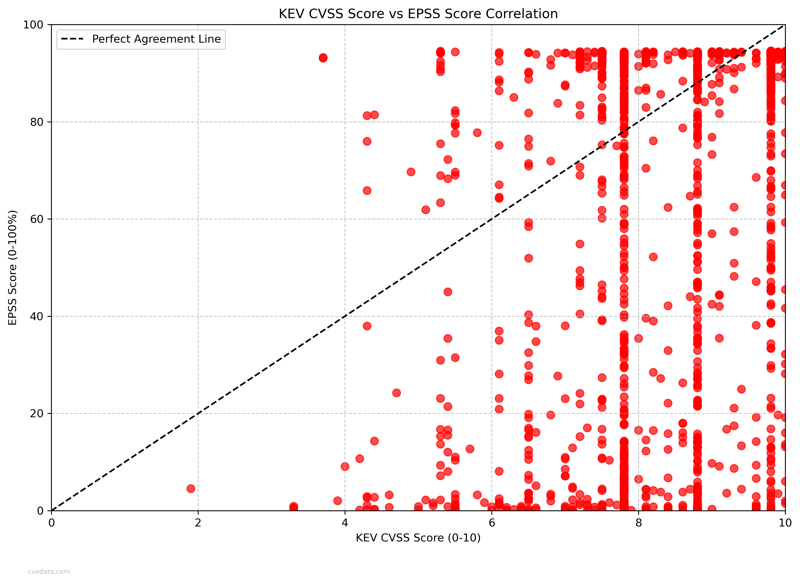
Shows the correlation between CVSS and EPSS scores for KEV vulnerabilities, providing insight into the relationship between the two. The further from perfect agreement the worse the correlation. Only scored vulnerabilities are included.
Score Difference Distribution
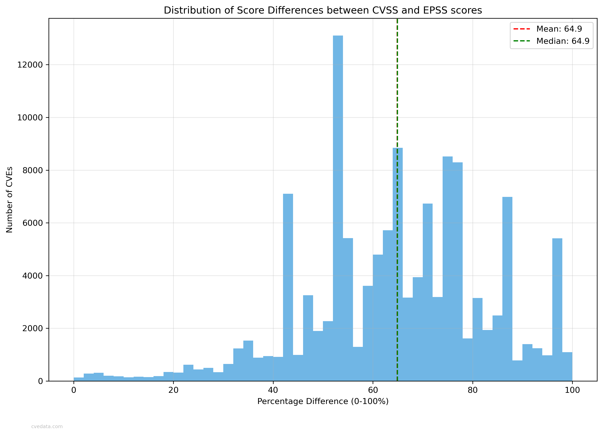
Shows the distribution of the delta between CVSS and EPSS scores, normalized to a 0-100 scale. A higher number is more different. Only scored vulnerabilities are included.
Compiled by Robert "RSnake" Hansen. I do not guarantee the correctness of the data or images and further disclaim the reliability of the original data used or how it has been processed or represented in this report. Use your own judgement and do your own research. Use the charts with or without attribution (it's always appreciated), but if you do use it, please include me if you do any additional interesting research.